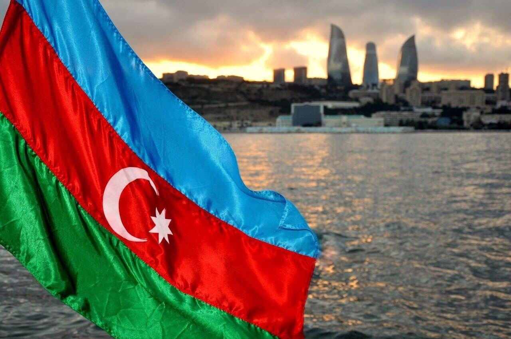
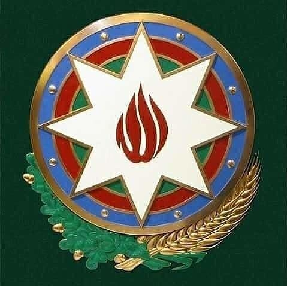

Информация о флаге
Флаг Азербайджанской Республики является одним из официальных символов Азербайджанской Республики (наряду с гимном и гербом). Флаг был впервые утвержден Советом Министров Азербайджанской Демократической Республики 9 ноября 1918 года. 5 февраля 1991 года флаг был утвержден Верховным Советом Азербайджанской Республики, провозгласившей в том же году свою независимость. По распоряжению Президента Азербайджанской Республики Ильхама Алиева ежегодно с 2010 года 9 ноября в Азербайджане отмечается День Государственного флага.
Синий свет
Синий – То, что наш народ – тюрки, связано с идеей тюркизма. Синий цвет также связан с тем, что тюрки всегда придавали значение цвету Чави, даже в древние времена. Поэтому синий цвет также имеет символическое значение.
Красный свет
Красный - означает модернизацию, развитие. Он выражает стремление к демократии. Красный цвет стал символом Европы в связи с развитием капитализма после Французской буржуазной революции в конце XVIII века. Над красным цветом находится полумесяц и восьмиконечная звезда. Хотя существуют точные, подробные сведения о значении цветов, существуют разные мнения о полумесяце и 8-конечной звезде.
Зеленый свет
Зеленый - означает мусульманскую цивилизацию, нашу принадлежность к исламской религии. Али Бей Гусейнзаде дал подробное объяснение зеленого цвета в своей работе «Зеленые огни в красной тьме».
Герб Азербайджанской Республики
Герб Азербайджанской Республики-один из официальных государственных символов Азербайджанской Республики (наряду с флагом и гимном). Государственный герб Азербайджанской Республики является символом независимости азербайджанского государства. • в печати всех государственных органов Азербайджанской Республики; • в бланках законов Азербайджанской Республики, решений парламента, указах и распоряжениях Президента; • в формах документов государственных органов; • в бумажных и металлических монетах, выпущенных Национальным банком Азербайджанской Республики; • в ценных бумагах Азербайджанской Республики, в государственных облигациях; • в паспорте гражданина Азербайджанской Республики; дипломатических и других иностранных паспортов; • в официальных изданиях Парламента Азербайджанской Республики и тд.
